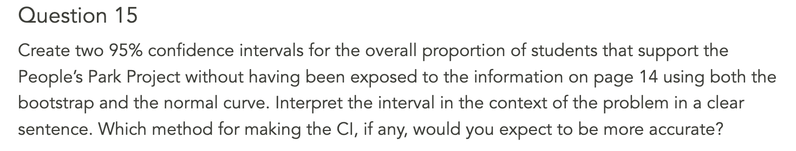
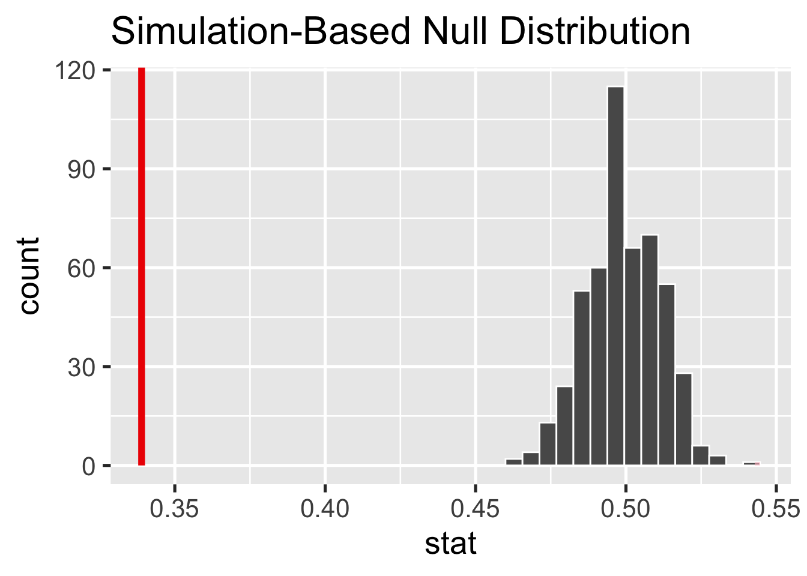

01:00
Wrong By Design
Agenda
- Concept Questions
- Problem Set 15
Concept Questions

Instead of constructing a confidence interval to learn about the parameter, we could assert the value of a parameter and see whether it is consistent with the data using a hypothesis test. Say you are interested in testing whether there is a clear majority opinion of support or opposition to the project.
What are the null and alternative hypotheses?
The null is the p = .5 and the alternative is that p != .5.
This brings up a good discussion of one- and two-tailed tests. When students share their answers, you can draw a picture of a null distribution on the board with the observed statistic as a vertical line and consider how the p-value calculation would change depending on the alternative hypothesis.
This also brings up a discussion of the link between hypothesis tests and confidence intervals. Below the picture of the null distribution on the board, you could draw a bootstrap distribution centered on the vertical line of the observed statistic. In the HT setting, you consider the location of the statistic relative to the null distribution. In making a decision with a CI, you consider the location of the parameter relative to the bootstrap distribution (or more generally, the sampling distribution of the statistic).
Code
Response: support_before (factor)
# A tibble: 1 × 1
stat
<dbl>
1 0.339Code
null <- ppk |>
specify(response = support_before,
success = "TRUE") |>
hypothesize(null = "point", p = .5) |>
generate(reps = 500, type = "draw") |>
calculate(stat = "prop")Code
null <- ppk |>
specify(response = support_before,
success = "TRUE") |>
hypothesize(null = "point", p = .5) |>
generate(reps = 500, type = "draw") |>
calculate(stat = "prop")
nullResponse: support_before (factor)
Null Hypothesis: point
# A tibble: 500 × 2
replicate stat
<int> <dbl>
1 1 0.516
2 2 0.495
3 3 0.497
4 4 0.517
5 5 0.493
6 6 0.508
7 7 0.496
8 8 0.502
9 9 0.496
10 10 0.485
# ℹ 490 more rowsCode
null <- ppk |>
specify(response = support_before,
success = "TRUE") |>
hypothesize(null = "point", p = .5) |>
generate(reps = 500, type = "draw") |>
calculate(stat = "prop")
visualize(null) +
shade_p_value(obs_stat, direction = "both")
What would a Type I error be in this context?
Answer: Concluding that there is a clear majority when in fact there is an even split.
01:00
What would a Type II error be in this context?
Answer: Concluding that there is an even split when in fact there is a clear majority.
After the previous question, students should get this quite easily.
Problem Set 15
30:00